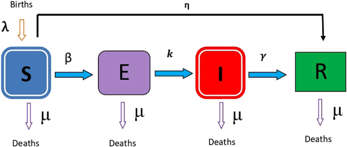
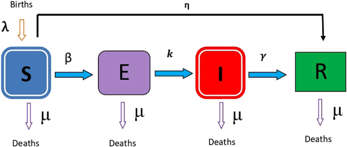
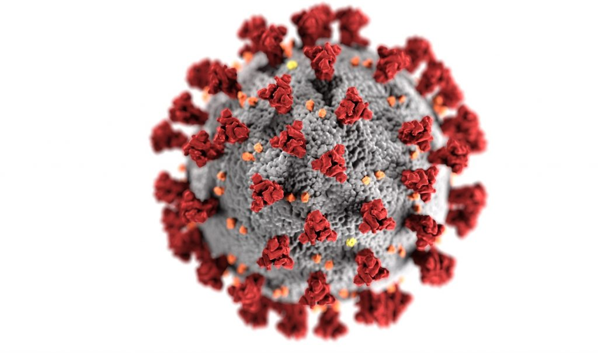
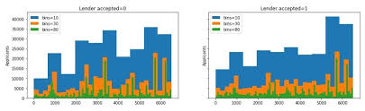

The epidemiology of SARS-CoV-2 is poorly understood. Here, we develop a model for the transmission of SARS-CoV-2 from December 2021 through June 2022 in Newfoundland and Labrador, Canada. This model is constructed using the R programming language. It is used for inference, forecasting, and scenario analysis. This model contains both fixed and fitted parameter values. Fixed parameters were defined using estimates from published articles. Fitted parameters values were found by calibration to estimated true incidence. The pandemic of SARS-CoV-2 is still evolving, and information that was used in the construction of this model may be incomplete or contain errors. Accordingly, these results are preliminary, provisional, and subject to change.

This project uses Python to scrape COVID-19 exposure notification data specific to Atlantic Canada, aimed at providing timely insights into regional exposure trends. Utilizing Python's robust web scraping capabilities, the project meticulously gathers data from official public health advisory sources. Central to the data processing phase is a dedicated Jupyter notebook, employing the pandas module for efficient data cleaning and normalization. This approach ensures the removal of inconsistencies and prepares the dataset for further analysis.
This was a private hackathon open to UmojaHack Rwanda participants. Expresso is an African telecommunications company that provides customers with airtime and mobile data bundles. The objective of this challenge was to develop a machine learning model to predict the likelihood of each Expresso customer “churning,” i.e. becoming inactive and not making any transactions for 90 days. Our (team of 4) solution placed 2nd by the close of the competition and was intended to help Expresso to better serve their customers by understanding which customers are at risk of leaving.
This solution ranked 1st in an in-class competition on Kaggle out of 43 teams. In this project the goal was to predict whether a DNA sequence region is binding site to a specific transcription factor or not using machine learning algorithms. Our best result ranked 1st on the private leader board with a score of 71.20%. Increasing the value of lambda from 0.80 through to 1 improves the private score to 71.40%. Moreso, it was later identified that a mismatch of 2 in both first and second kernels & 3 in third produces a public score of 71.60 and private score of 72.60.

This project solution ranked 1st at AMMI Rwanda in a bootcamp Kaggle competition. The random forest regressor had an RMSE score of 17.31265 private score and 26.27123 public score. The models built in this notebook attempted to predict the price of a bottle of wine based on a collection of over one hundred thousand reviews and other product features.

This is the final capstone project for the Microsoft Professional Program in Data Science which emphasizes on developing a final report for the machine learning task which highlights the full cycle of exploratory data analysis from data, to statistical and machine learning modeling, and finally communicating the results. The objective of this work is to predict whether a mortgage application was accepted or denied according to the given dataset which is provided by DrivenData.